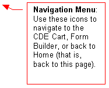
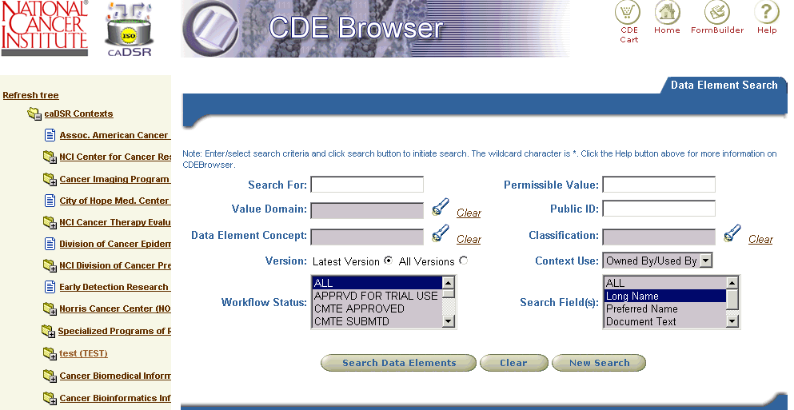
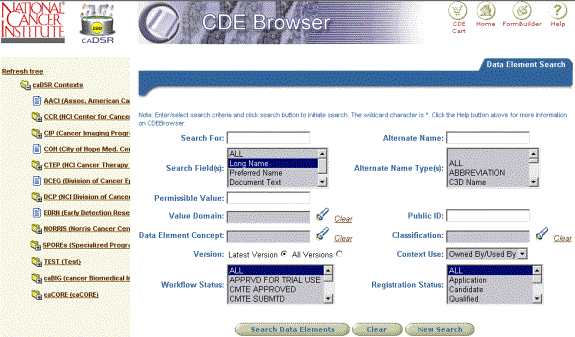

CDE Browser Help
Navigating
Data Element Search Results
Downloading Data Element Search
Results
Downloading and Viewing Form Templates
Introduction
The Common Data Element (CDE)
Browser is an application for browsing, searching and exporting CDEs from the
National Cancer Institute (NCI) Cancer Data Standards Repository (caDSR). CDEs are descriptors of data – metadata –
that are used to set up data collection forms for cancer research studies. The caDSR is a database that provides for
storage and management of CDEs; the CDE Browser is a user interface to the
caDSR. The caDSR divides groups of CDEs
into Contexts. Each Context has an
administrator with the authority to manage and edit the CDEs that it owns. More information on the caDSR and CDE
project can be found at http://ncicb.nci.nih.gov/core/caDSR.
Overview and Quick Start
There are two panes in the CDE
Browser interface. On the left is a
navigation tree that serves two basic functions. First, it allows you to see the names of each of the caDSR
Contexts and the various groupings of data elements within each Context. Second, it allows you to restrict the search
of data elements to those included in one of those groupings. Clicking on one of the closed folder ()
icons will open up the tree, but will not restrict the search. Clicking on the brown hypertext in one of
the tree branches, however, will restrict search to just those data elements
included in the grouping you clicked on.
On the right side of the interface
is the Data Element Search pane. This
pane allows you to further restrict your data element search, by entering
additional constraints, beyond what was selected in the navigation tree. Any navigation tree restrictions you may
have selected still apply. You can see
what you have selected from the tree in the “breadcrumb” trail printed near the
top of the Search Pane. After you add
and execute your additional search constraints, you can download the data
elements in either Excel or XML format.
To summarize, the basic way you
use the tool is:
1. In the
tree on the left, click on closed folder ()
icon to open up the tree and find the groupings of data elements that you seek.
Click on open folder icon ()
to close a branch in the tree.
2. Click on
the brown hypertext of the tree branch corresponding to the grouping of
interest. Groupings can be any of a number
of types, including Classification Scheme Items, form templates, or even the
entire Context. After you click on the
hypertext, the subset you selected will appear in the Data Element Search pane
on the right.
3. In the
Data Element Search pane on the right, enter any additional search terms or
constraints into one or more of the searchable fields. Execute the search by clicking on the Search
button. The further restricted subset
will be returned.
4. Download
the result set to either Excel or XML by clicking on the appropriate download
button.
If you go back to the tree and
click the hypertext of another branch (i.e. go back to step 2 above), the
previous results will be lost and the newly selected subset will appear on the
right.
Navigation Tree Structure
Top-level nodes in the tree correspond to Contexts in the caDSR. A data element belongs to the owning Context that has administrative authority to edit and update it. In addition to belonging to an owning Context, a data element can be “designated” for use by another non-owning Context. In this version of CDE Browser, it is possible search for data elements that are Used, Owned, or Owned & Used by a particular context. The default is Owned & Used by.
Below the Context level are branches that correspond to some type of grouping of the data elements within the Context. Groupings can be any of the following types:
·
Classifications and Classification Scheme Items. A Classification is simply a collection of
related Classification Scheme Items i.e. a mini-hierarchy within the tree. Data Elements, in turn, can be assigned to
one or more Classification Scheme Items.
The actual Classification assignments are managed by the Context
administrator. Classification schemes
that have workflow status of ‘RELEASED’ are displayed in the tree.
·
Protocol Form Templates.
Data Elements can be used on a form (for clinical trials, this will be a
case report form or CRF). Many of these
forms have been generalized into template forms that can be re-used. For the Cancer Therapy Evaluation Program
Context (CTEP), these templates have
been grouped by Phase and Disease. Within each of these groupings (Phase and
Disease), they are further grouped by type of template. Currently, CTEP has
templates for Phase III trials only. Clicking on one of these template form
names in the tree will return the data elements for that form in the right
pane.
·
Protocol Forms: They are forms (CRF’s) that are used in a
clinical trial. They are composed of data elements. Protocol forms that belong
to the CTEP Context are not be shown in the tree.
·
Specialized groupings.
Other types of groupings can be found in the tree as well. For example,
the Cancer Therapy Evaluation Program Context groups data elements based on CDE
disease committee decisions into “core” and “non-core” categories that can be
found in the tree, under each type of disease classification.
Data Element Search Pane
The right portion of the CDE
Browser page is the Data Element Search pane, which includes the following
fields that can be used to create a more restrictive search:
·
Search For: This is a keyword search term
entry field. The search will look for the entered keyword in the fields of the
data elements specified by Search Field(s) search criteria. The default is to do an exact match
search. You can add an asterisk (*)
wildcard character to broaden the search.
The wildcard character can be used at the beginning, middle, or end of
the search term.
·
Valid Value: To filter data elements based on
their valid values, enter a valid value in the field provided. You can add an asterisk (*) wildcard
character to broaden the search. The
wildcard character can be used at the beginning, middle, or end of the search
term.
·
Value Domain: The Value Domain is the component
of the data element that indicates the permissible values that can be collected
in an actual research study. To filter
data elements based on Value Domain, click on the  icon.
A popup window will appear that allows you to do a keyword search for
the Value Domain of interest. Once the
results appear in the popup, click on the particular Value Domain you want to
use in your data element search. The
Value Domain you selected will automatically be entered into the search
criteria box.
·
Data Element Concept: The Data
Element Concept is the component of the data element that indicates the
semantic meaning of the data element.
To filter data elements based on Data Element Concept, click on the icon and proceed as described above for Value
Domain.
·
Workflow Status: The Workflow Status is the
administrative status of the data element.
In most cases you will probably want to search for data elements with a
status of RELEASED in the name, but any status is available as a search criterion. To filter data elements based on their
Workflow Status, use the multi-selection drop down list) and select the
Workflow Statuses of interest. Mutilple workflow statuses can be selected from
the drop down list by holding the ctrl key.
·
Public ID: To filter
data elements based on Public ID, enter a valid Public ID in the field
provided. Starting with version 2.0,
label CDE ID has been replaced with Public ID.
You can add an asterisk (*) wildcard character to broaden the
search. The wildcard character can be
used at the beginning, middle, or end of the search term.
·
Classification:
Classification Scheme Items are particular classifications
that data elements can be assigned to by the Context administrator. To filter data elements based on their
Classification Scheme Item assignment, click on the icon to search for and select the
Classification Scheme Item of interest, similar to what is described above for
Value Domain.
·
Version: Data
Elements are assigned version numbers by the Context administrator. To filter data elements based on their
version, select the Latest Version or All Versions radio button.
· Context Use: A data element belongs to the owning Context that has administrative authority to edit and update it. In addition to belonging to an owning Context, a data element can be “designated” for use by another non-owning Context. In this version of CDE Browser, it is possible to search for data elements that are Used, Owned, or Owned & Used by a particular Context. Owned & Used by is the default setting.
- Search Field(s): This
search criteria should be used in conjunction with Search For search
criteria. The search will look for the entered keyword in the fields of
the data elements specified by this search criteria. To select search
fields, use the multi-selection drop down list. Mutilple search fields can
be selected from the drop down list by holding the ctrl key.
Click the Search
Data Elements button to execute the search. The screen will display the data elements
that match the criteria. Note that
these results will be based on both the initial subset that was selected in the
tree, plus the additional constraints entered into the Search pane.
To browse the details of any data
element in the results set, the click on the hyperlinked Preferred
Name text. This will cause a new browser window to open with
the details of the selected data element. This new window includes Data
Element, Data Element Concept, Valid Values, Classifications, and Usage tabs.
Clicking on any of these tabs will display the corresponding details for that
data element. Please note that when
another data element is selected from the search results list, if this Details
window is still open it will be refreshed with the newly selected data
element’s details. This means that only
one data element details window at a time can be displayed.
Navigating Data Element Search Results
Data Elements that satisfy the specified search criteria are
displayed in a table. A maximum of 40 records are shown on a page. When the
record count is greater than 40, the search results are paginated across
multiple pages. A page scroller is
displayed at the top and bottom of the search results table. It consists of a
drop down list containing available search results pages. It also allows
provides functionality to navigate to previous and next pages when they exist.
Record count for next and previous pages is also displayed with the next ( )
and previous page ()
icons. One can navigate to a particular page either by choosing the page from
the drop down list or by clicking the next icon (
)
and previous page ()
icons. One can navigate to a particular page either by choosing the page from
the drop down list or by clicking the next icon ( ).
Next and Previous page icons (
).
Next and Previous page icons ( )
are disabled when they do not exist.
)
are disabled when they do not exist.
Downloading Data Element
Search Results
The output of the data element
search is displayed as a table, and you can page through the table
interactively on the web. The entire result set can also be downloaded as an Excel or
XML file. Further, the form templates
can be downloaded as Word document.
By clicking Download
Data Elements to Excel link above the search result table,
you can save the data elements to a comma-separated value Excel file. First, a
notification window is displayed warning you that the downloading process will
take a few seconds. Then, the File Download window is displayed with the Open
or Save
buttons. When the Open
button is pressed, the Excel file is displayed in a separate window. When the Save
button is pressed, the Save As window is displayed. You must manually close the notification window after the
download process is completed.
By clicking Download
Data Elements as XML link above the search result table, you
can save the data elements in an XML file. First, the notification window is
displayed warning you that the downloading process will take a few
minutes. Please wait, as the XML file
building process is considerably slower than that for Excel. Then the File
Download window is displayed with the Open or Save options.
We suggest selecting the Save option rather than Open,
since directly opening the XML output appears to crash some browsers. After the file is saved you can view it in
your favorite XML tool. You must
manually close the notification window after the download process is complete.
Download and Viewing Form Templates
Clicking on a Context folder icon
()
will display the branches under that Context.
One of these is named Protocol Form Templates. Further grouping of
template depends on the selected context. For example, in the CTEP
Context, these templates have been
grouped by Phase and Disease. Within each of these groupings (Phase and
Disease), they are further grouped by type of template. Currently, CTEP has
templates for Phase III trials only.
Clicking on the template hyperlinked text will display all the data
elements belonging to the template in the search result table. There also will
be a Download/View link above the result table. Clicking on the link will
display the Word document of the template in a separate window if the template
Word file exists in the database. Otherwise, an error message will be
displayed.
Technical Tips
·
Browser Help - The site is best viewed by following these
guidelines.
o
Set the screen resolution to
1024x768.
o
For complete viewing of the dictionary, use either Netscape
6.x or Internet Explorer version 5.x or higher.
·
Search Help
o
Enter exact words or phrases on which to search. The default
is an exact match search.
o
The wildcard search character is *. The wildcard characters
can be used at the beginning, middle, or end of words (e.g. '*first*bio*').
o
The search mechanism filters on Data Elements based on the
tree nodes from which the search is launched.
For instance, when browsing Core Data Elements in the Clinical Trials area, a
search from this node will return only Core Data Elements. Conversely, a search
from the All Data Elements node searches all elements for the entered criteria.
·
Protocol Form Templates Download Help
o
The CDE Data Templates can only be downloaded in a MS Word
file.
o
Results from individual browsers may vary: some will prompt
you to save the .doc file to disk; others will automatically download the file
and open it with MS Word; still others may download and open the file within
the browser itself.